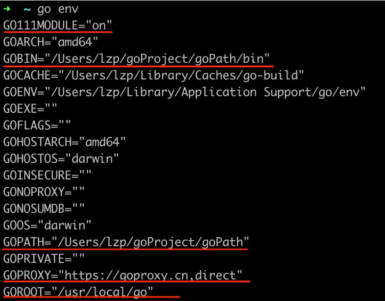

go Modules 是 golang 新的官方包管理工具，替换了旧的基于 GOPATH 的方法，对依赖包进行管理
修改系统变量：
export GOROOT=/usr/local/go # 指定 golang 的安装位置
export GOPATH=/Users/lzp/goProject/goPath # 存放自己开发的源码和第三方包，不能和 GOROOT 指定同一个目录
export GOBIN=/Users/lzp/goProject/goPath/bin # 指定通过 go install安装的包的路径
export GO111MODULE=on # 开启 go modules
export GOPROXY=https://goproxy.cn,direct # 设置 go 模块代理，防止被强
通过go env命令查看配置是否生效

模块操作通过在对应的项目目录下执行go mod [参数]命令完成
参数：
| 参数 | 描述 |
|---|---|
| init [模块名] | 初始化模块，执行后目录下会出现 |
| download | 下载相关模块，依赖的第三方包会被下载到了 $GOPATH/pkg/mod 路径下 |
| edit | 编辑go.mod文件 |
| graph | 打印模块需求图 |
| tidy | 删除错误或者不使用的modules |
| vendor | 生成 vendor 目录 |
| verify | 验证依赖是否正确 |
| why | 查找依赖 |
通过go get 命令可以对已经下载的模块进行更新